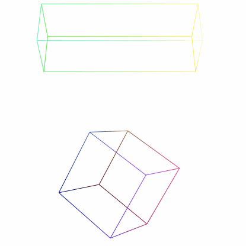
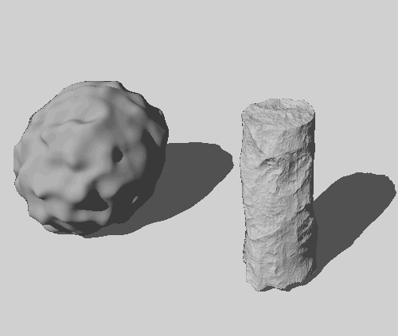
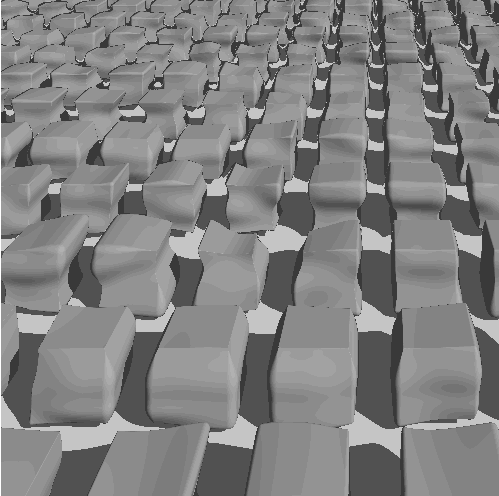
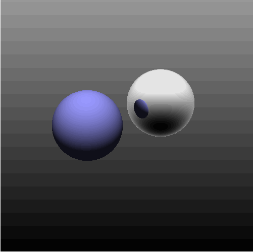
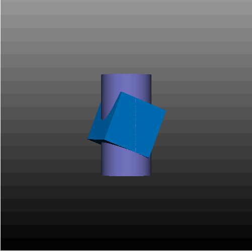
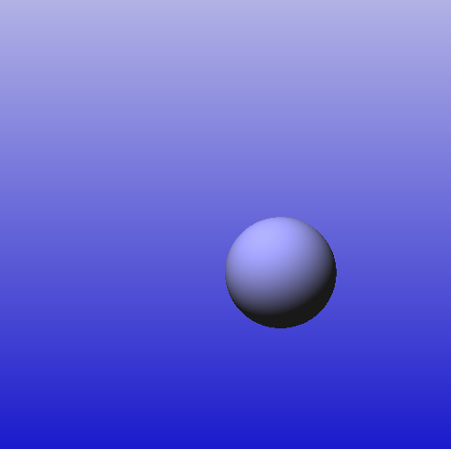
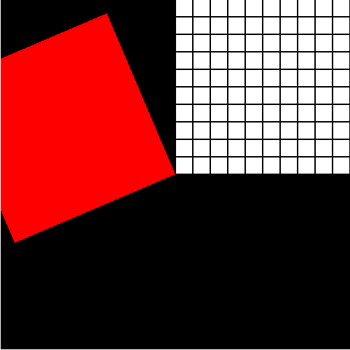

Kristofer Schlachter
Projects:
Project 05 - Javascript Matrices

Project 04 - Sphere Tracing with distance fields

Project 04 - more sphere tracing with many cubes

Project 03 - Ray Sphere with Reflection

Project 03 - Ray Box + Ray Quadric

Project 02

Project 01
